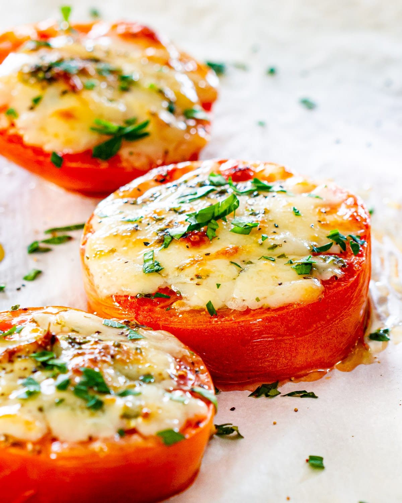

Baked Tomatoes

Description
Baked tomato slices are a delicious way to top leftover pasta!
Ingredients
- 2 tablespoons olive oil, divided, or as needed
- 1 large tomato, cut into 1/2-inch-thick slices
- 1 clove garlic, minced
- 1 spring fresh rosemary, leaves stripped and finely chopped
- salt and ground black pepper to taste
Steps
- Preheat the oven to 350 degrees F (175 degrees C). Brush a baking sheet with about 1 tablespoon olive oil.
- Arrange tomato slices on the baking sheet; sprinkle rosemary and garlic on top. Brush with remaining 1 tablespoon olive oil; season with salt and pepper.
- Bake in the preheated oven until tender, 5 to 10 minutes.